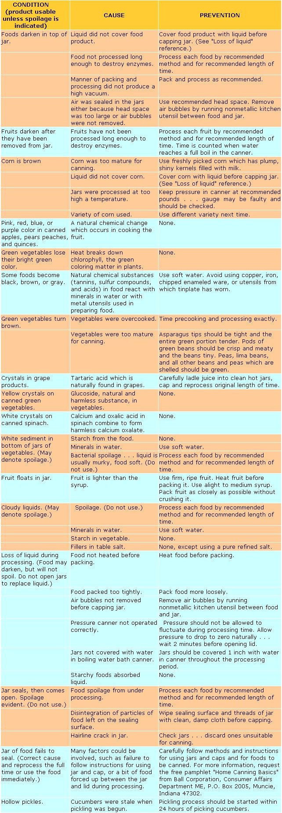

(Reprinted with permission from theBall Blue Book (30th Edition), copyright © 1979 by Bail Corporation. The Ball Blue Book is available for $2.50 postpaid from Ball Corporation, Consumer Affairs Department ME, Muncie, Indiana 47302.)
Now that most folks have their gardens in-and, in some areas, are already harvesting their first crop-sit's time to think about putting up some of those delicious homegrown goodies . . . for year-round enjoyment and lower winter food bills.
Canning food can be as easy as it is rewarding.
There are, however, some difficulties that occasionally plague even the most experienced canner . The chart below will tell you just what might have cause(your past batches of preserved goodies to turn out not quite as you expected, and how to avoid similar preserving problems this summer.
Remember, too, that spoiled food should never be eaten. The most obvious signs of dangerous spoilage include gas bubbles and spurting liquid ... soft, mushy, slimy, or moldy food . . . cloudy liquid (or liquid with sediment in it) .. . leaking jars . . . bulging lids . . . and unnatural odors and colors.
For safety's sake, be sure to boil all of your canned low-acid foods at least 15 minutes before you taste them. If the liquid foams or if the food has an unnatural odor when it's heated in this manner, the dish is very likely to be spoiled . . . and should definitely be discarded!
|
 |
|
|